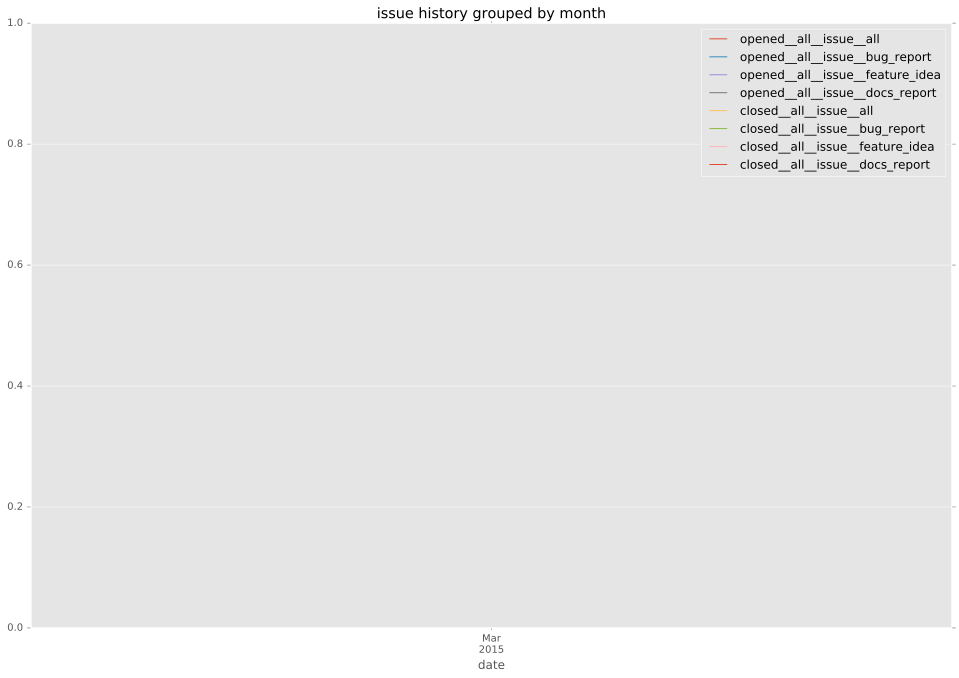
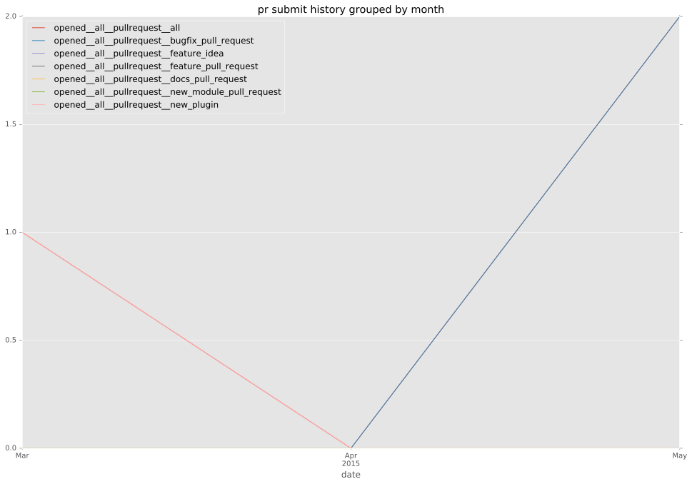
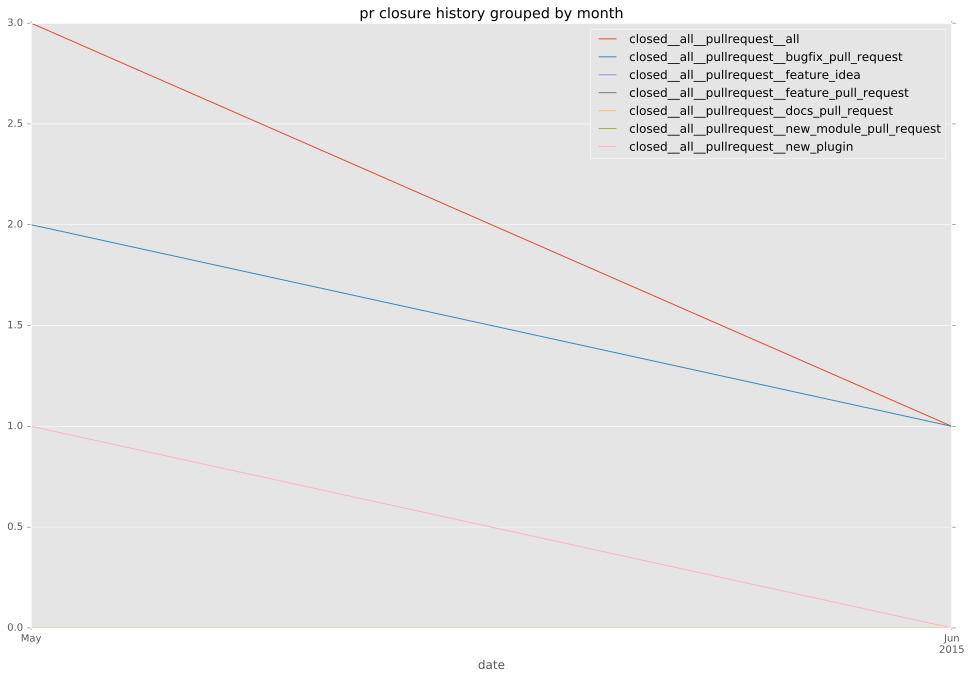
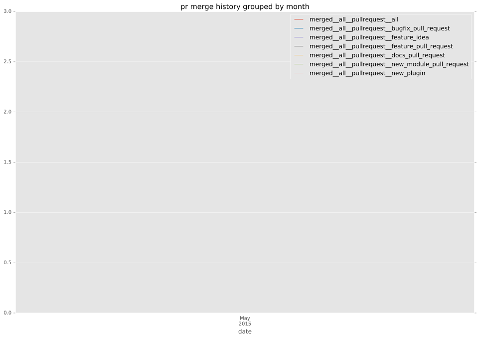
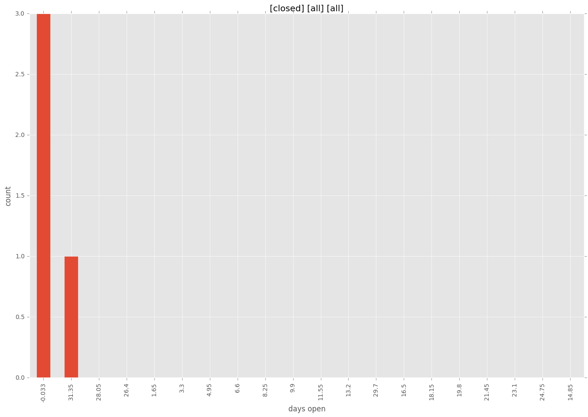
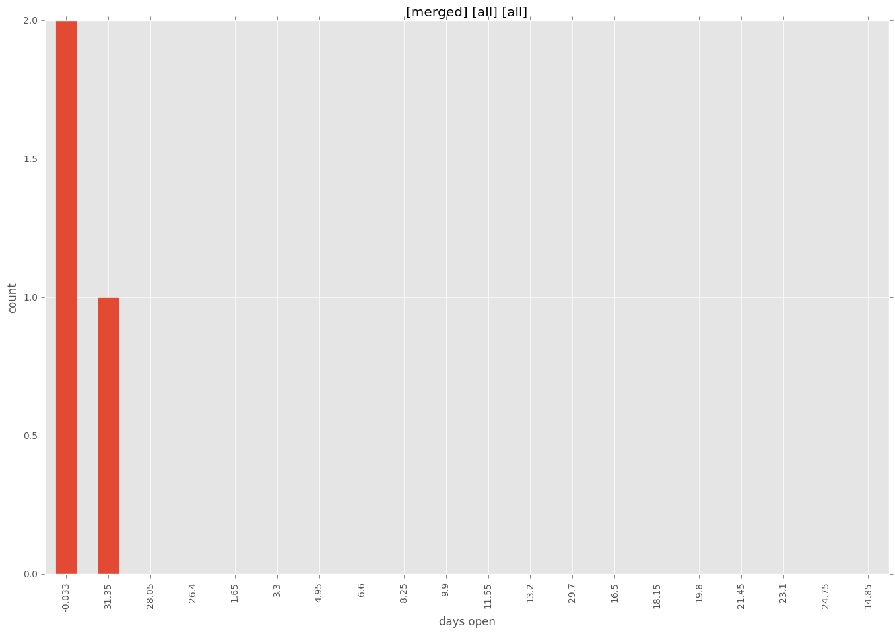
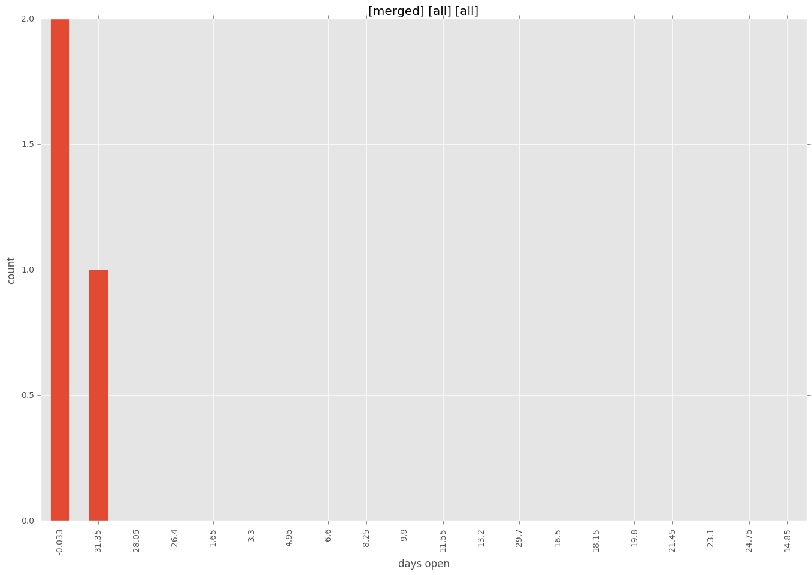

authors
- emonty
maintainers
- emonty
- shrews
- juliakreger
- j2sol
- rcarrillocruz
contributors
- emonty : 12 commits
- Shrews : 8 commits
- bcoca : 2 commits
- abadger : 2 commits
total issue counts
bugfix pull request: 2
pullrequest: 3
issue: 1
new plugin: 1
feature idea: 1
issue history

pullrequest history



days open by issue type
all
count: 7
std: 16.1023512037
min: 0
max: 33
median: 0.0
mean: 9.42857142857
pullrequest
count: 0
std: nan
min: nan
max: nan
median: nan
mean: nan
bugfix pull request
count: 4
std: 0.0
min: 0
max: 0
median: 0.0
mean: 0.0
feature idea
count: 1
std: nan
min: 0
max: 0
median: 0.0
mean: 0.0
issue
count: 0
std: nan
min: nan
max: nan
median: nan
mean: nan
new plugin
count: 2
std: 0.0
min: 33
max: 33
median: 33.0
mean: 33.0
closures grouped by total days open



 
